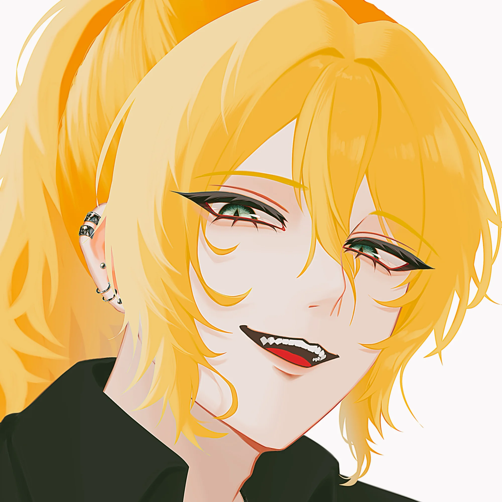

NO IMAGE
アイリス
フェイランの双子の妹。なんか冷たく当たられている。ツンデレ妹。アイリスは普段エリザベスの屋敷で住み込みで働いているため、ほとんど会うことはない。
フェイラン
家無し金なし酔いどれバーテンダー
| Country | Ireland |
|---|---|
| City | Galway |
| Birthday | January 26 |
| Height | 183 cm |
| Weight | 72 kg |
| Department | Others 部門非所属 |
| Agent Type | AGENT |

| Gender Identity | |
|---|---|
| Romantic Orientation | |
| Sexual Orientation |
お気楽に過ごしているため、全然深いことは考えてないし恋愛に関する悩みもない。常に全力。今のところ女の子としか付き合ったことはないけど、身近にもいろんな人たちがいるから、色んな在り方に対して肯定的。
| Hobbies | 酒を飲むこと、歌うこと、管楽器の演奏、人と喋ること |
|---|---|
| Likes | 酒、ポテト料理 |
| Dislikes | 節約、計画 |
酒を飲むためにバーで働いていると言っても過言ではない。勤務中も酒を飲み、客に酒を奢って奢り返されて酒を飲み、給料すらも酒を飲むために使う。酒カス。不死者じゃなかったらとっくに死んでいるレベルで酒を飲みまくっており、給料は毎月マイナス。
バーテンダーのため顔は広いが、彼のメインの付き合いは機構というよりも彼の職場の客である。
フェイランの双子の妹。なんか冷たく当たられている。ツンデレ妹。アイリスは普段エリザベスの屋敷で住み込みで働いているため、ほとんど会うことはない。
仲の良い友人。時折機構の本部ビル上層階のバー RED LINEにて、グレイ直々にバーテンダーのバイトをするよう頼まれることがある。「3杯くらいなら飲んでいいよ」って言われて快諾している。なんなら本職のほうの休日はほとんどRED LINEのバーテンダーをやっている。ヒューズが給料赤字になってグレイに「お金貸して～」って頼み込んでも貸してくれないけど、代わりに上記のバイトや、アレクサンダー財閥でのグレイの秘書としての仕事を紹介してくれる。給料がとってもよくて、フェイランはニッコニコである。
暇なときにはグレイとドライブに行ったりバーに赴いたりする。ヒューズは常に酒を飲んでいるので、運転はグレイである。
「妹を奪った相手」という認識をしており、温和なフェイランにしては珍しくあまり好意的に接することができない相手。それでも律儀に会話はする。
エリザベスのどうにも本心が見えないような態度も苦手。
友人。バーRED LINE開店当初、バーテンダー未経験なのにグレイによってバーテンダーに任命されたクレアに対し、フェイランが色々と教えた。年齢（？）感覚も近く、フラットに接することができる友人である。
フェイランは長いことクレアのことを穏やかで努力家でしっかりしてるひとだな～と思っていたが、家をなくしてクレア宅に泊めてもらったときにクレアの異なる一面を知ってしまい、それ以来ちょっとビビっている。仲はいい。けど、またクレア宅に泊りでもしたら今度は完全に狂わされてしまう……‼と危機感を抱いている。
フェイラン「でもまあグレイもサディスティックだし、この兄にしてこの妹ありって感じかな～」
友人。ジャックとはノリだけで会話が進むため、話がふわふわしていく。グレイ・クレア絡みでジャックも交えて会うことが多い。が、ジャックがひとりでバーに来ることはないし、ジャックにサーフィンに誘われても「オレはビーチで酒飲みたいな～」と言ってしまうため、微妙に指向が一致しない。
スヴァンテは時折フェイランの働くアイリッシュパブ・Basiliskに足を運ぶので、喋る機会がある。かつてリミナの辺境で不死者であることを隠しながらバーテンダーをしていたフェイランを発見し、彼に機構を紹介したのはスヴァンテである。その時も、スヴァンテが一人でバーに足を運び、バーテンダーをしていたフェイランと会ったことで今のフェイランの生活がある。
自業自得とはいえ給料が赤字になって苦しむフェイランに呆れつつも、スヴァンテは毎回律儀に酒を奢っている。
フェイランはリヴィのことを「優しいお兄さん」と言う。「自分で言うべきじゃないとは思うけど、僕を優しいって形容するのはどうかと思うよ」とリヴィは苦言を呈している。
リヴィは時折一人でBasiliskに顔を出し、フェイランの酒を飲んでいく。強い酒を流し込むような飲み方ばかりして、酔って脆くなったリヴィを何度も見ているフェイランは、リヴィが多面的な人間であることを理解している。
流星の如く表れたテロリストである。
| Agent Type | AGENT |
|---|---|
| Weapon Type | 【入力】 |
| Battle Role | 【入力】 |